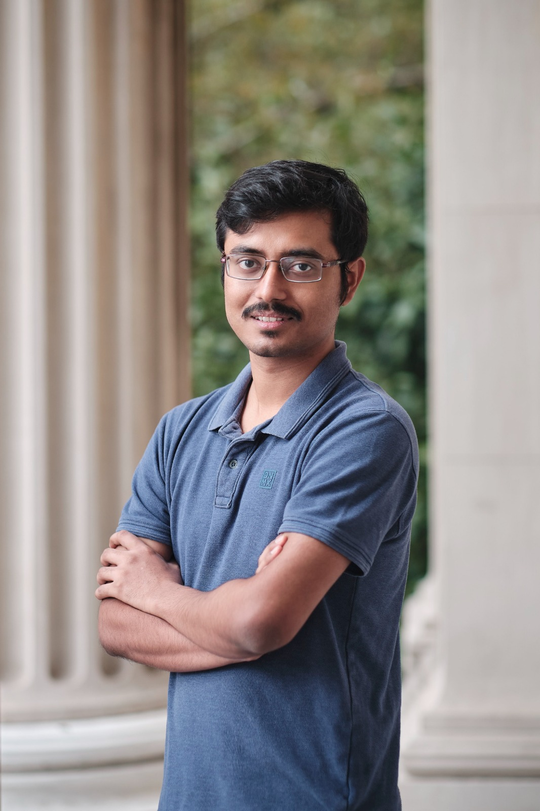

Arindam Roy Chowdhury

I am a PhD student in the Department of Industrial Engineering & Operations Research (IEOR) at Columbia University, advised by Prof. Henry Lam. I study uncertainty quantification and decision-making under uncertainty.
I hold bachelor’s and master’s degrees in Statistics from the Indian Statistical Institute, Kolkata.
Most recently, I was a Quantitative Researcher Intern at Susquehanna International Group (SIG), developing and evaluating systematic equity strategies using options-market signals.
Previously, at Capital One, I modeled loan defaults and built tools for handling missing data in decision trees. At NASA Langley Research Center, I worked on multivariate flight-data modeling.
Outside work, I enjoy chess, table tennis, puzzles, travel, and long walks through new neighborhoods. I’m always happy to discuss robustness, data-driven optimization, quantitative finance, or related topics.
Research Interests
Uncertainty quantification, data-driven optimization, robust decision-making, quantitative finance, and computational statistics.
Awards
- Student Paper Competition Winner, New England Statistics Symposium (NESS), 2026.
- Tang Family Fellowship, Columbia University, 2022.